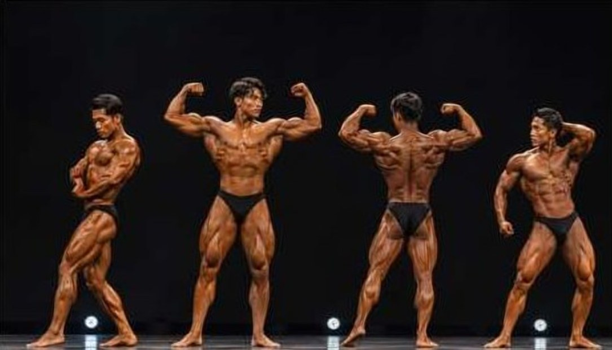

Physical Championship — 開催中止
開催中止のお知らせPHYSICAL CHAMPIONSHIP
PHYSICAL CHAMPIONSHIP は、開催を中止することとなりました。楽しみにしてくださっていた皆さま、ご応募いただいた皆さまには、深くお詫び申し上げます。

PHYSICAL CHAMPIONSHIP は開催を中止します。
Iconic Shizuoka 2026 のマルシェとステージは、10月11日（日）・12日（月・祝）に予定どおり開催します。ご不明な点は iconicshizuoka@gmail.com までお問い合わせください。